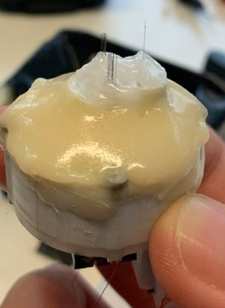
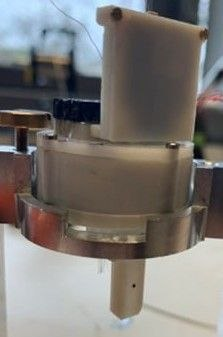
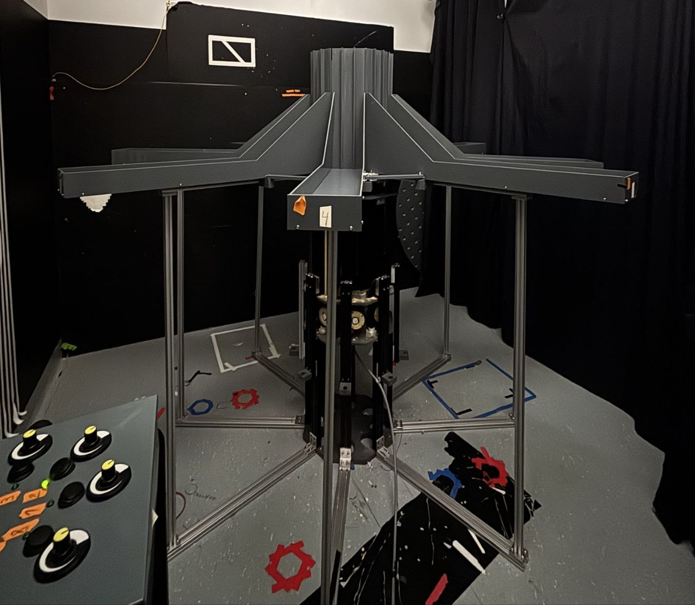
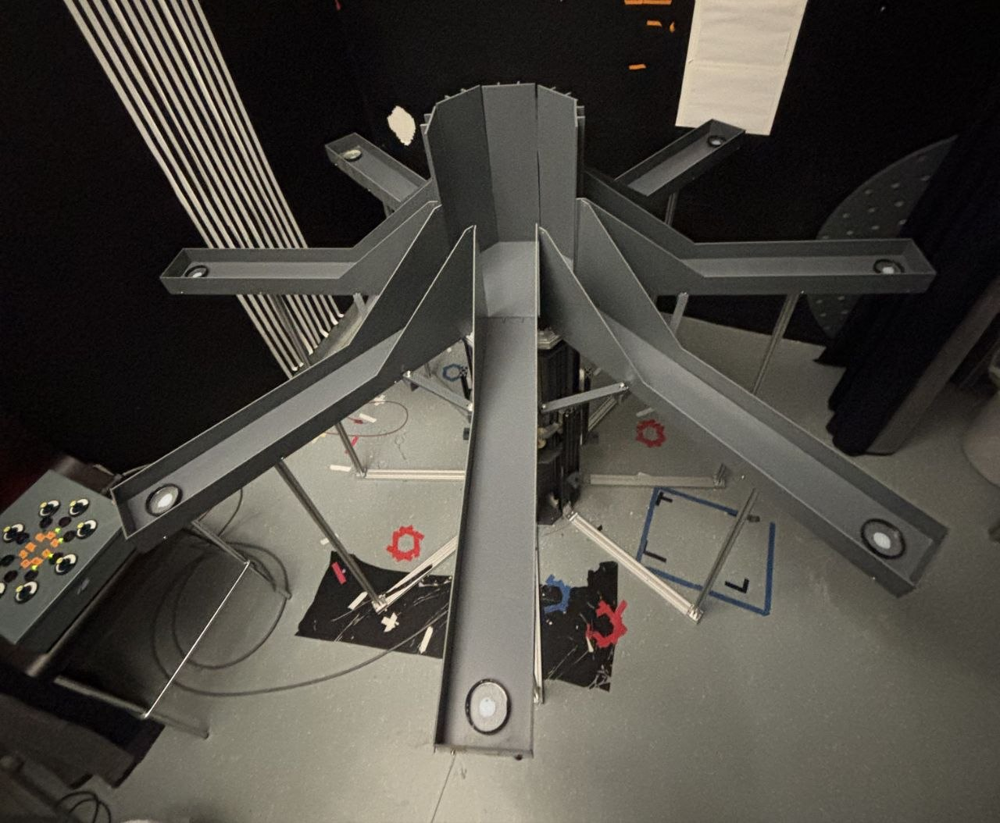

The Integration Challenge
Modern systems neuroscience increasingly demands high-density, multi-region recordings to resolve complex
circuit dynamics. However, merging disparate hardware technologies—specifically silicon-based
Neuropixels and traditional wire tetrodes—into a single, synchronized acquisition and preprocessing
pipeline presents significant engineering hurdles. This project details a custom end-to-end architecture
built to simultaneously record and sort electrophysiology data from the hippocampus (CA1) and medial
prefrontal cortex (mPFC) during freely moving behavioral tasks.
Custom Microdrive & Hardware Assembly
To enable simultaneous dual-region targeting, the experiments utilized a custom microdrive combining a
single Neuropixels probe (versions 1.0 or 2.0) targeting the mPFC alongside 24 individually movable
tetrodes targeting the CA1.
- Tetrode Fabrication: The 24 tetrodes were constructed from four twisted 12 µm
tungsten wires and subsequently gold-plated to achieve a ~300 KΩ impedance.
- Implant Design: The Neuropixels probe and the tetrode drive were successfully
combined into a single, unified implant architecture.
- Data Acquisition: The hardware was driven by an Intan RHD2132 headstage and
recorded through Open Ephys version 0.6.7.


Custom microdrive housing 24
individually movable tetrodes (CA1) and a single Neuropixels probe (mPFC).
Behavioral Paradigms: The 8-Arm Maze
The hardware architecture was deployed during complex spatial tasks on a radial eight-arm maze.
We utilized a synchronized overhead camera environment to track the animal's trajectory via a
head-mounted RGB LED cluster. The pipeline seamlessly handles data from two primary
cognitive tasks:
- Spatial Reference and Working Memory (SRW): Rats navigated the maze to collect
rewards placed consistently in three fixed arms.
- Cue-Guided Association (CGA): A more demanding setup where a specific food cue
presented in the start arm dictated which of the alternative arms contained a reward.


The 8-arm radial maze setup
showing the tracking of head-mounted RGB LEDs during the SRW and CGA behavioral tasks.
Automated Clustering & Software Workflow
Because the physical recording modalities differ fundamentally, the preprocessing pipeline utilizes
isolated, optimal sorting algorithms for each data stream while maintaining absolute temporal
synchronization.
- Synchronization & EEG Extraction: The system aligns temporal events across behavioral cameras,
Neuropixels, and tetrodes. Continuous EEG traces are simultaneously extracted and stored for oscillation analysis.
- Tetrode Processing: The tetrode data is routed to Mountainsort, which is executed
locally via a Windows Subsystem for Linux (WSL2).
- Neuropixels Processing: The high-density probe data is clustered using Kilosort4,
reading directly from Open Ephys `.imro` and `.json` site maps.
- Curation & Export: Output from both sorting engines is converted and unified for
manual curation within Phy 2. The final curated datasets are exported into standard
laboratory formats (`.res`, `.clu`) using automated Jupyter Notebook scripts.